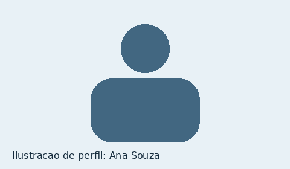
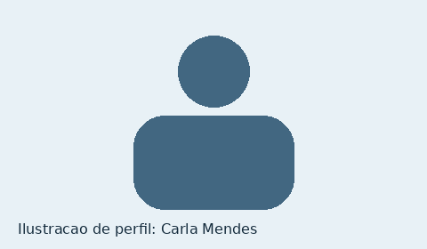

Ana Souza
Engenheira de Software
Palestra: “Arquitetura de software na prática”
Perfil fictício criado para demonstração acadêmica; a imagem não é uma fotografia.
SATEC 2026 — Semana Acadêmica de Tecnologia
Projeto acadêmico: evento, participantes e condições de participação fictícios.
Os nomes e perfis abaixo pertencem ao exemplo acadêmico enviado e não representam participação confirmada de pessoas reais.

Engenheira de Software
Palestra: “Arquitetura de software na prática”
Perfil fictício criado para demonstração acadêmica; a imagem não é uma fotografia.
Designer de UX
Palestra: “Design inclusivo: interfaces para todos”
Perfil fictício criado para demonstração acadêmica; a imagem não é uma fotografia.

Pesquisadora em Inteligência Artificial
Palestra: “IA e o futuro do trabalho”
Perfil fictício criado para demonstração acadêmica; a imagem não é uma fotografia.